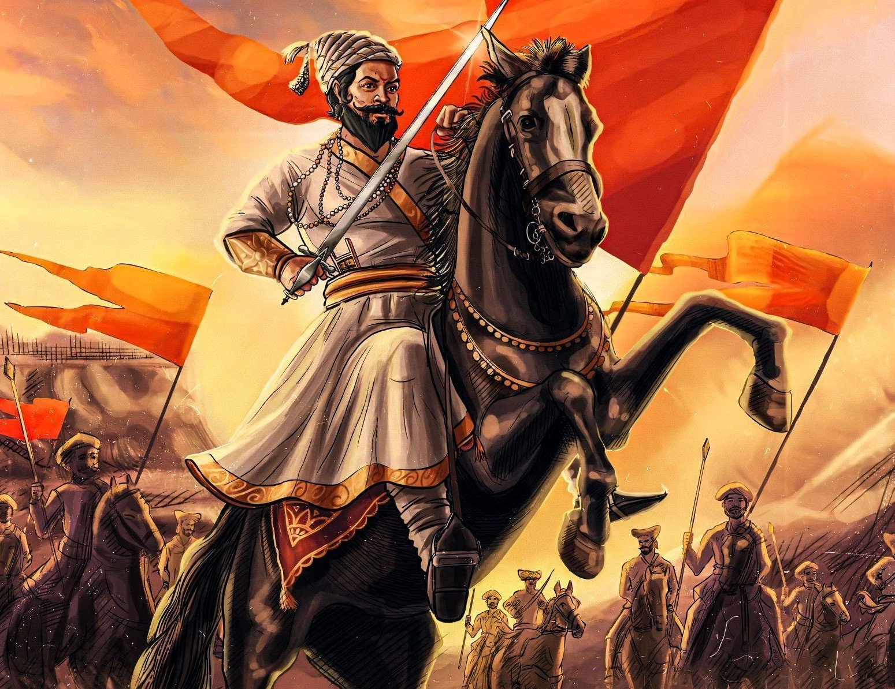

The Great Maratha Warrior King

Chhatrapati Shivaji Maharaj (1630–1680) was a visionary leader and the founder of the Maratha Empire in western India. Known for his courage, wisdom, and progressive governance, he established a kingdom based on justice, equality, and respect for all communities. His ideals of Swarajya (self-rule) inspired countless movements for freedom in India centuries later.
Shivaji Maharaj was a fearless warrior who fought valiantly against mighty empires to protect his people and land.
He inspired loyalty among his soldiers and citizens, leading with vision and compassion.
Shivaji Maharaj introduced efficient systems of governance, taxation, and military organization that strengthened his empire.
He was known for his progressive policies, ensuring safety and dignity for women in his kingdom.
The legacy of Chhatrapati Shivaji Maharaj is one of courage, vision, and enduring inspiration. More than three centuries after his reign, he continues to be celebrated as a symbol of self-rule, justice, and patriotism. His ideals of Swarajya, or independence, were not just political ambitions but guiding principles that shaped the identity of his people. At a time when foreign powers dominated much of India, Shivaji Maharaj’s determination to establish a sovereign state gave hope to millions.
His governance was marked by fairness and inclusivity. Shivaji Maharaj introduced efficient administrative systems, reduced the burden on farmers, and ensured accountability among his ministers. He respected all communities and upheld moral values, creating a kingdom where justice was paramount. His progressive policies toward women, including strict laws to protect their dignity, remain one of the most admired aspects of his rule.
Militarily, Shivaji Maharaj pioneered guerrilla warfare in India, using the rugged terrain of the Western Ghats to his advantage. His forts, such as Raigad, Pratapgad, and Sinhagad, stand today as monuments to his tactical brilliance and foresight. He also recognized the importance of naval strength, building one of the earliest organized navies in India to safeguard the coastline.
Beyond politics and warfare, Shivaji Maharaj nurtured culture and tradition. He promoted the use of Marathi and Sanskrit in administration, supported poets and scholars, and encouraged a vibrant cultural identity among his people. His coronation at Raigad in 1674 was not only a royal event but a declaration of pride and sovereignty.
Today, Shivaji Maharaj’s memory lives on in festivals, literature, and monuments across India. His life story continues to inspire leaders, freedom fighters, and ordinary citizens alike. His legacy reminds us of the importance of courage, justice, and unity in building a strong and fair society.